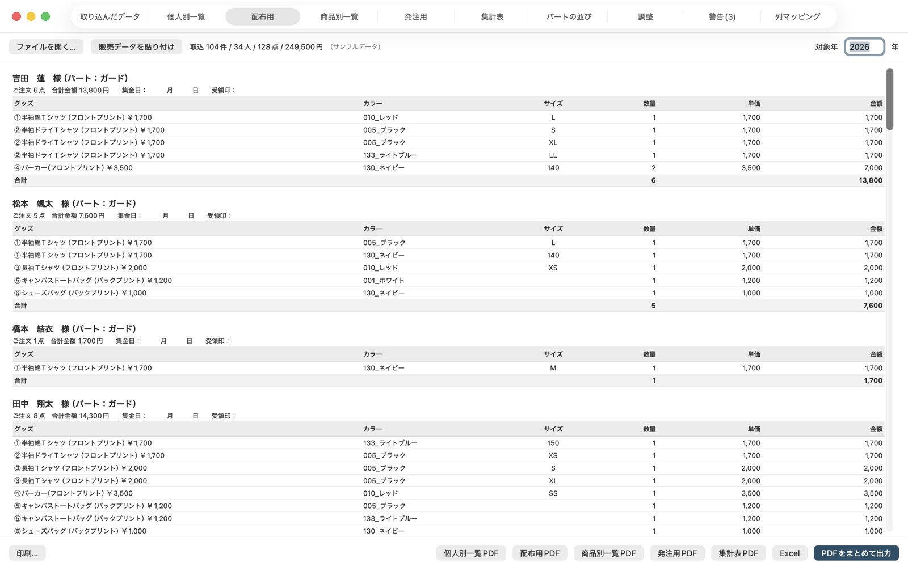
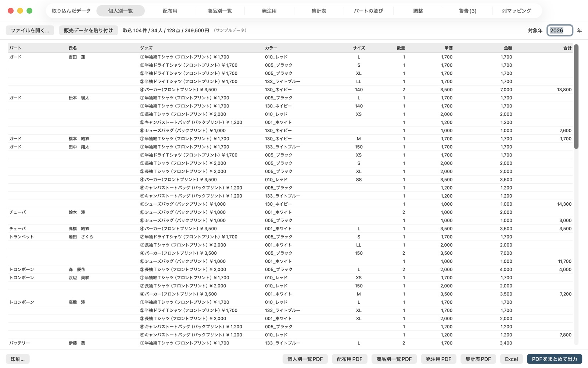
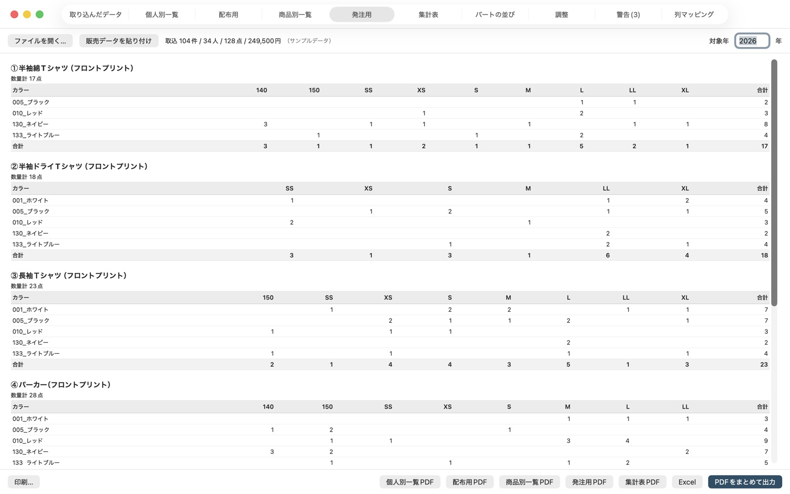
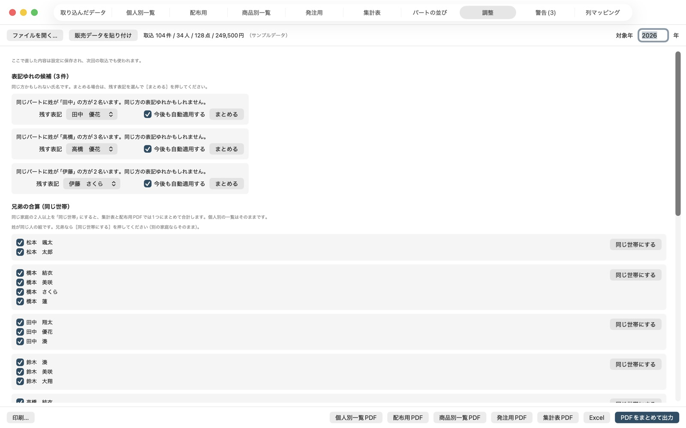
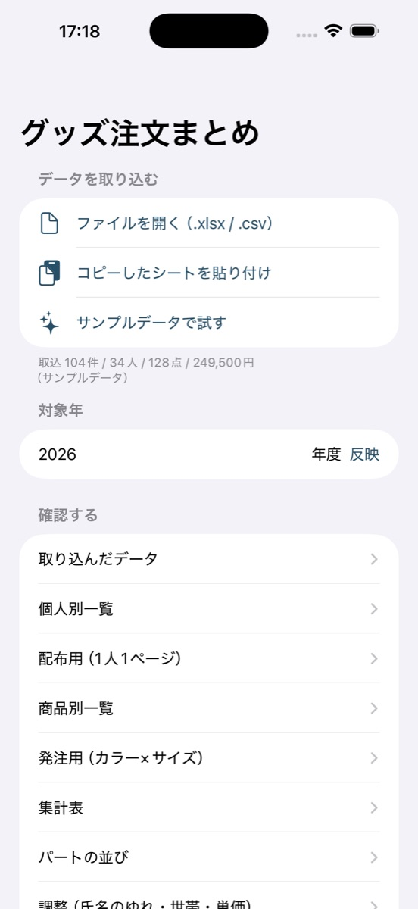
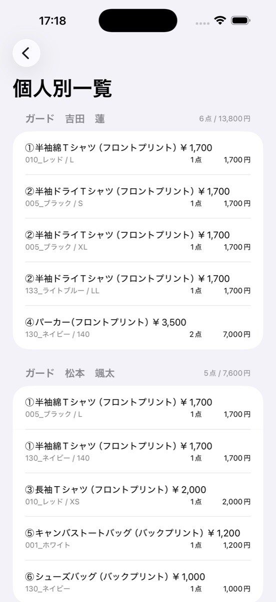
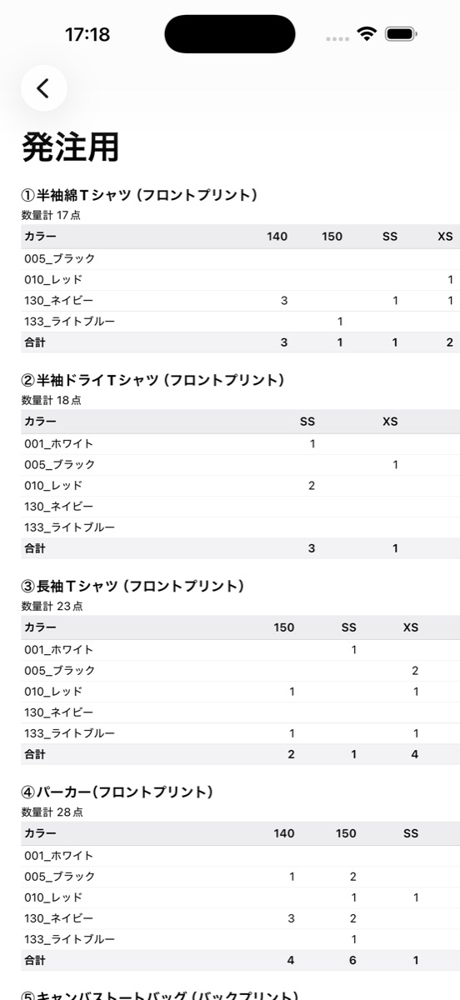
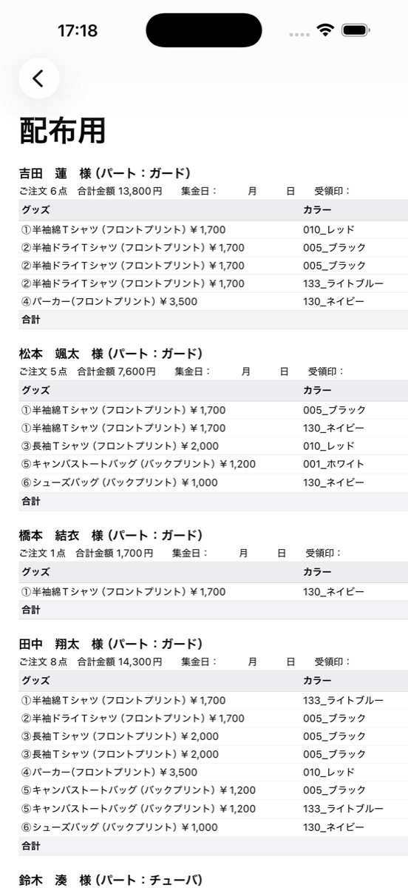

グッズ注文まとめ
フォームの申込から、配布・発注・集金の表まで。
部活やサークルのオリジナルグッズ販売で、担当者が Excel で手作業していた集計をまとめて引き受けるアプリです。Google フォームに集まった申込を取り込むだけで、配布用の明細や業者に渡す数量表、集金表を PDF と Excel で作ります。
- Mac
- iPhone
- iPad
- 一度の購入で全部の端末に
- 通信なし・データの収集なし

手作業の集計を、まとめて引き受ける
申込を取り込んだら、あとは確かめて書き出すだけ。名前の表記ゆれや二重申込のような、手作業で見落としやすいところも拾います。
開くだけで取り込み
回答シートを Excel 形式（.xlsx）で保存して開くだけ。CSV や、シートをコピーしての貼り付けにも対応。
列を見出しで見分ける
列の並びや数が年ごとに変わっても、見出しの言葉から自動で判定。読めないときは列の役割を手で指定できます。
単価を自動で読む
「①半袖Tシャツ ￥1,700」のような選択肢から、並び順と単価を読み取ります。価格が無ければ数量だけを集計。
表記ゆれと二重申込
スペースの有無だけの違いは自動でまとめ、姓が同じで名が違う人は候補として提示。同じ人の二重申込は行番号でお知らせ。
兄弟をまとめて集金
兄弟を「同じ世帯」にすると、集計表と配布用の明細が1つにまとまります。
区分の並び順を自由に
パートやポジションなどの並び順をドラッグで決められ、次回も覚えています。
作れる表
PDF と Excel で書き出せます。Mac は印刷ボタンから直接印刷、iPhone・iPad は共有シートからファイルに保存・AirDrop・メールで渡せます。
画面
写っている名前と注文は、アプリの「サンプルデータで試す」の架空のデータです。
Mac



iPhone




使い方
基本の流れ
- Googleフォームの回答スプレッドシートを開き、メニューの「ファイル」→「ダウンロード」→「Microsoft Excel（.xlsx）」で保存します。
- アプリの「ファイルを開く」でその .xlsx を選びます（CSV でも読めます。Mac では、シートを見出し行ごと全選択してコピーし、「販売データを貼り付け」でも取り込めます）。
- 「取込 104件 / 34人 / …」のように件数と合計が表示されたら取り込み完了です。
- 「調整」で氏名の表記ゆれ・兄弟の合算・単価を直し、「警告」で二重回答などを確かめます。
- 「個人別一覧PDF」「配布用PDF」「商品別一覧PDF」「発注用PDF」「集計表PDF」「Excel」のボタンで書き出します。iPad / iPhone では共有シートから「ファイルに保存」や AirDrop で渡せます。
初めて使うときは「サンプルデータで試す」を押すと、架空の申込データで一通りの動きを確かめられます。
フォームの作り方
このアプリで読めるシートにするために。
- 質問の見出しに「区分（パート・ポジション・学年など）」「氏名」「グッズ（商品）」「カラー」「サイズ」「数量」という言葉を含めてください。列の並び順や数は自由です。
- グッズの選択肢に「①半袖Tシャツ ￥1,700」のように丸数字と価格を入れておくと、並び順と単価を自動で読み取ります。価格が無い場合は数量だけを集計します（単価はアプリ内でも入力できます）。
- 見出しの言葉が違って読めなかったときは、「列マッピング」でどの列が何かを指定できます。
よくある質問
Googleスプレッドシートに直接つなげますか？
つなぎません。このアプリは外部と通信しない設計です。スプレッドシートの「ファイル」→「ダウンロード」で .xlsx を保存して開いてください。
「区分・グッズの列を見つけられませんでした」と出ます
見出しの言葉がアプリの知っている言葉と違っています。「列マッピング」で役割を指定して「再解析」を押すか、「設定」→「列の判定」にその見出しに含まれる言葉を足してください。
同じ人が2人として集計されます
「調整」の「表記ゆれの候補」に出ていれば、残す表記を選んで「まとめる」を押してください。次回からは自動で同じ人として扱います。スペースの有無だけの違いは、最初から自動でまとめています。
兄弟をまとめて集金したい
「調整」の「兄弟の合算（同じ世帯）」で2人以上を「同じ世帯にする」と、集計表と配布用PDFで1つにまとまります。
発注用PDFに金額が出ないのはなぜですか？
業者に渡す表なので、意図的に金額を載せていません。金額は個人別一覧・商品別一覧・集計表・Excel に出ます。
iPad / iPhone で Google ドライブのファイルが選べません
「ファイル」アプリの左の一覧（ブラウズ）で「…」→「サイドバーを編集」を開き、Google Drive をオンにしてください。以後、アプリの「ファイルを開く」からも Google ドライブの中が見えます。
印刷できますか？
Mac は「印刷…」（⌘P）で、いま見ている表をそのまま印刷できます。iPad / iPhone は PDF を書き出してから、ファイルアプリなどで印刷してください。